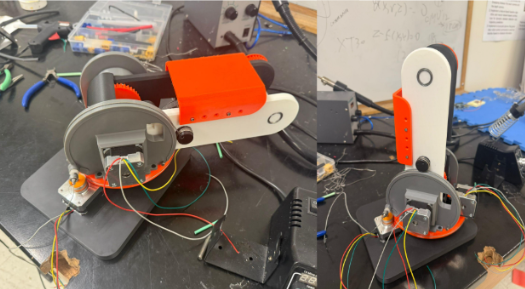

Current Projects
Here are some of the exciting projects I am currently working on:
6 DOF cable driven Robotic Arm
Guide Dog Robot
Humanoid from the torso up

Here are some of the exciting projects I am currently working on:
I am leading a team to design a power-efficient, lightweight quadruped guide dog robot for visually impaired individuals. This project addresses the limitations of existing robots like the Unitree Go 1. I contributed to multiple aspects of the project, including designing the body made of sheet metal and securing the electronics in place. Additionally, I worked on various analyses such as structural, kinematics, dynamics, and stair-climbing analysis.

Capstan Mechanism was designed through different iterations. Pre-tension Mechanism uses a vented socket screw with a ball fitting to clamp the steel cable. Final design offers a 300 degrees Range of Motion with zero backlash and minimal noise.
I am developing a 6 Degrees-of-Freedom (DOF) robotic arm designed to lift a 1 kg payload using affordable Nema 17 stepper motors as part of my honors thesis in the DaROS lab under Professor Donghyun Kim. To achieve a lighter design, I implemented a cable-driven mechanism that allows the motors to be mounted at the shoulder (base) rather than on each distal joint (elbow and wrist). The robotic arm features a shoulder with two DOFs, an elbow with one DOF, and a wrist with three DOFs.The shoulder yaw utilizes an 8:1 capstan drive.The shoulder pitch combines a belt transmission with a capstan drive that acts as planetary gear for extra torque. The elbow features a double belt transmission with an appropriate reduction ratio. The wrist mechanism is currently under development but will include a cable-driven bevel gear system.

I am leading the robotics mechanical team to prepare for the MassRobotics competition 2025. We are desigining, fabricating, and testing a humanoid from the torso Up that serves as a bartender. The Humanoid includes a torso, two 7 Degrees-of-Freedom (DOF) robotic arms, and a 3 DOF neck. I divided the team into subteams to work on subsystems (shoulder, elbow, and wrist) and be more efficient. The shoulder contains two DOFs, one being a capstan mechanism. Elbow is two DOFs (Pitch and Roll). Pitch motion is run through a cable transmission mechancism. Roll motion includes a planetary gear. The wrist features 3 DOFs including a gripper. Neo rev 21, AK60-6 motors as well as STS3215 servos were used all over the robot to provide sufficient torque to lift up a 750 ml wine bottle.